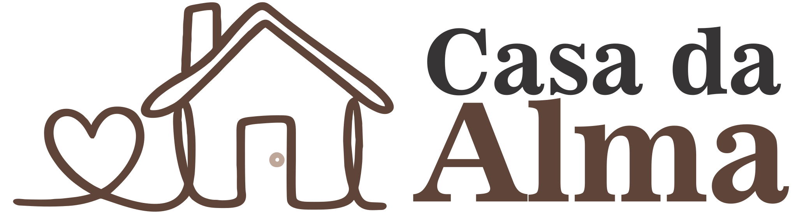

Delicadeza + firmeza
Acolher não é passar a mão. É sustentar você com segurança.

Carregando...Psicoterapia, terapia cristã e mentoria com delicadeza e firmeza. Sem promessas vazias, apenas presença, clareza e segurança real.
Viviane Schott Psicoterapeuta Terapeuta Cristã Mentora de mulheres
Viviane Schott Psicoterapeuta Terapeuta Cristã Mentora de mulheres
Sobre
Aqui, você encontra um espaço de escuta, direção e recomeço. Um encontro com a sua história com verdade e ternura respeitando seu tempo, seus limites e a sua fé.
Acolher não é passar a mão. É sustentar você com segurança.
Ferramentas e clareza para decisões, rotinas e relacionamentos.
A cura começa quando você se permite ser vista com amor.
Casa da Alma
Como funciona
Você não precisa dar conta sozinha. A gente caminha com estrutura, cuidado e clareza.
Entender seu momento e o que está pesando sem pressa, sem julgamento.
Nomear emoções, padrões e feridas; construir recursos para atravessar com segurança.
Transformar clareza em passo: escolhas, limites, reconciliações e recomeços.
Apoio e constância. A mudança real é feita de presença não de pressão.
Entre no grupo do WhatsApp e receba o primeiro passo com acolhimento.
Conteúdo, avisos e direcionamentos.
Sem spam. Você pode sair quando quiser.
Prova social
Depoimentos são pessoais e variam aqui é sobre caminho, não sobre promessa.
Eu me senti acolhida de verdade. Pela primeira vez eu consegui respirar e colocar nome no que eu vivia.
A firmeza com delicadeza fez toda diferença. Eu aprendi a me posicionar sem me perder e sem culpa.
Mais que uma consulta, é um lugar de paz. Saio de cada sessão com o coração no lugar e a mente clara.
Dúvidas Frequentes